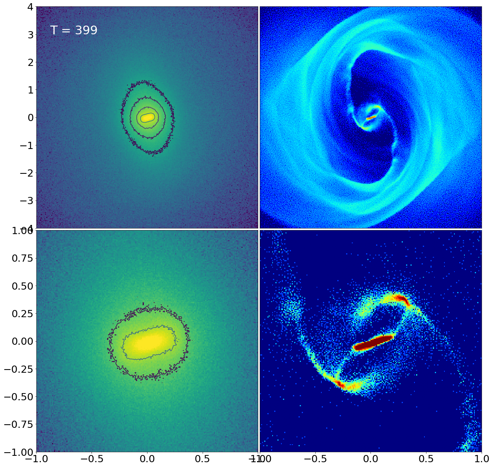

01
Gas Flows in Double-Barred Galaxies
Galaxies with an inner bar nested inside an outer bar have unique dynamical properties and may help regulate the evolution of central black holes. With high-resolution numerical simulations, I investigate gas-flow patterns in a self-consistent double-barred galaxy and whether they can drive gas from kiloparsec scales down to the central parsecs.